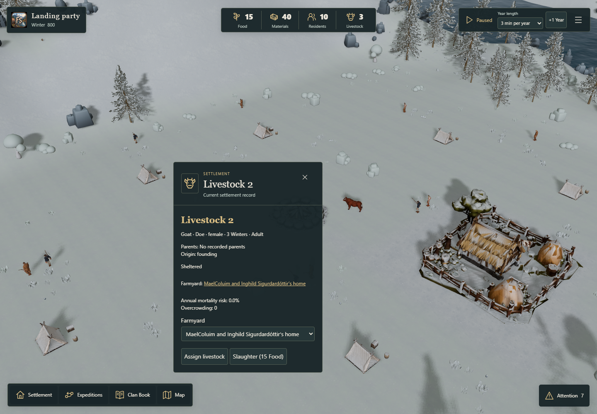
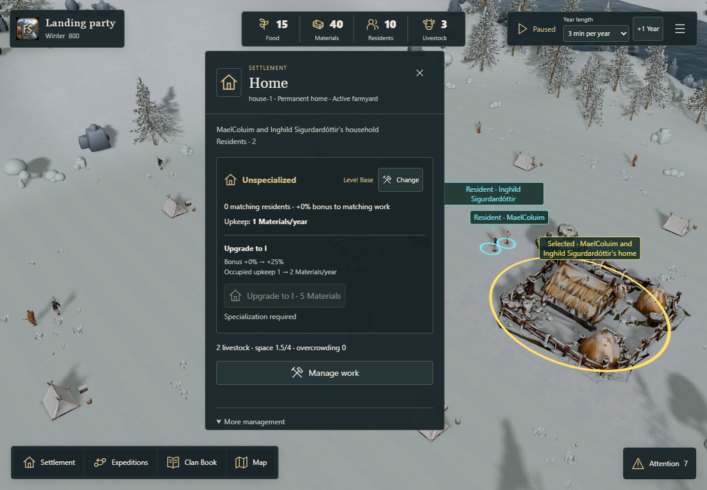
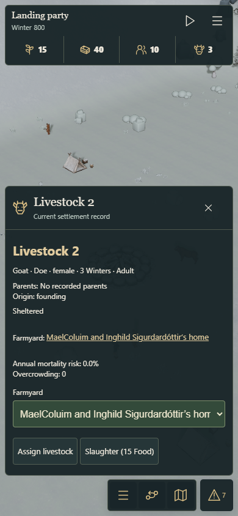

Livestock v0.1A
Stable local titles and shared species rules. This is the first Core slice of #217; new campaigns still start with the existing cattle herd.
The goat shown here is an explicit synthetic test fixture. The Core and management support it without substituting a cattle model. Founding species and approved economics follow in #219; additional native assets in #220.
Open Fjord Play · Validation and reproduction
Friendly identity, actual biology

Species and sex stay separate from the local title. A missing native mesh does not remove the animal from the canonical HUD or management.
Shared Farmyard capacity

Headcount and occupied space are reported separately. The individual roster is available under More management; assignment remains a soft cap.
Phone selection

The same production management flow is checked using touch taps at a 390px viewport.